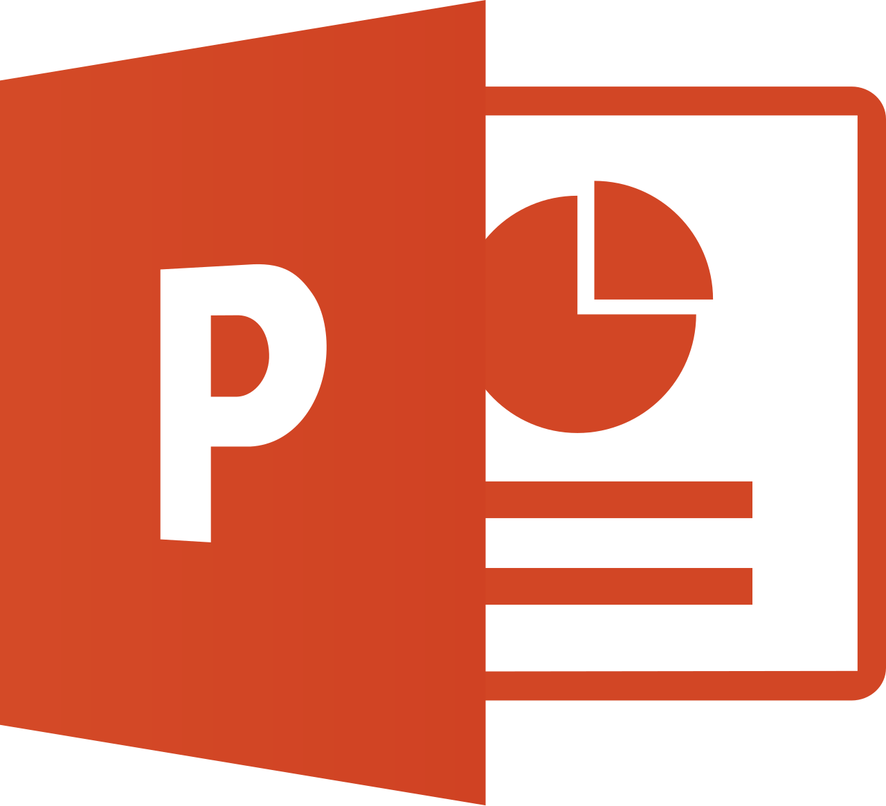

SION MEDIA COMPANION
Auto discovery
Terhubung tanpa konfigurasi rumit
Kami mencari SION Media secara otomatis di jaringan lokal Anda.
💡 Tips: Saat terhubung, tekan tombol ESC atau Ctrl+Shift+D pada keyboard untuk memutuskan koneksi dan kembali ke menu ini.
IP Lokal Anda
Mendeteksi...
Sedang memindai jaringan...
Siap untuk scan
Tekan "Mulai Scan" untuk mencari server SION Media di jaringan lokal Anda.
Belum ada riwayat koneksi.

PowerPoint Bridge
Kirim slide aktif dan speaker notes langsung ke SION Media.
1Jalankan Slide Show di Microsoft PowerPoint.
2Pilih server SION Media di tab Koneksi, lalu klik Mulai.
3Operator menyetujui permintaan pada panel PPT SION Media.
Kontrol Preview dan Live tetap berada di tangan operator SION Media.
Advanced Diagnostics
Compatibility mode lebih lambat dan hanya digunakan jika Agent modern tidak dapat berjalan.
Bridge belum aktif.